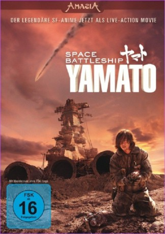

#1333 Space Battleship Yamato
 
 IMDB-Wertung: 6.1 / 10
IMDB-Wertung: 6.1 / 10  Metascore: 0
Metascore: 0 
Seit Jahren schon tobt der Krieg gegen die außerirdischen Gamilon und fordert hohe Verluste. Die Erdatmosphäre ist nach Meteor-Bombardements radioaktiv verseucht, die wenigen Überlebenden vegetieren in unterirdischen Bunker-Städten vor sich hin. Das Ende der Menschheit steht kurz bevor, als unerwartet eine Nachricht der Iscandarier die Erde erreicht. Die Erzfeinde der Gamilon verfügen über die nötige Technologie, um unseren Planeten wieder bewohnbar zu machen! Das letzte übrig gebliebene Kampfschiff Yamato macht sich auf den gefährlichen Weg nach Iscandar. Wird sich die Yamato gegen die übermächtige Gamilon-Flotte behaupten können und ihr Ziel erreichen?
Jahr: 2010
Dauer: 138 Minuten
FSK: 12
Land: Japan Studio: Splendid FilmTonspuren:
Untertitel:
Auflösung: 1080p (1920x800) Größe: 4014 MB
Genre: Action, Abenteuer, Drama, Sci-Fi
Regisseur: Takashi Yamazaki
Drehbuch: Leiji Matsumoto, Shimako Sato, Yoshinobu Nishizaki
Soundtrack: Naoki Satô
Darsteller:
- Shin'ichi Tsutsumi als Mamoru Kodai
 Takahiro Miura als Furuya
Takahiro Miura als Furuya- Ebizô Ichikawa als
 Teruyuki Kagawa als
Teruyuki Kagawa als  Kazuki Kitamura als
Kazuki Kitamura als - Takuya Kimura als Susumu Kodai
- Meisa Kuroki als Yuki Mori
- Toshirô Yanagiba als Shiro Sanada
- Naoto Ogata als Daisuke Shima
 Hiroyuki Ikeuchi als Hajime Saito
Hiroyuki Ikeuchi als Hajime Saito- Maiko als Aihara
- Reiko Takashima als Doctor Sado
- Toshiyuki Nishida als Hikozaemon Tokugawa
- Toshihiro Yashiba als Yasuo Nanbu
- Kazuki Namioka als Saburo Kato
- Takumi Saitô als Akira Yamamoto
- Kensuke Ohwada als Kenjiro Ota
- Kana Harada als Sasaki
- Junpei Uto als Isaoka
- Saaya Ishikawa als Shima's Wife
- Ippei Sasaki als
- Miyû Sawai als Higashida
- Bunki Sugiura als Shimada
- Natsuhi Ueno als Tobita
- Yûichirô Hirose als Segawa
- Megumi Shôji als Hoshino
- Yôsuke Asari als Ando
- Yumiko Fujita als Saito's Mother
- Isao Hashizume als Heikuro Todo
 Masatô Ibu als Desler
Masatô Ibu als Desler- Kisuke Iida als Nanba
- Keisuke Kamimura als
- Hironori Koyama als
- Marika Matsumoto als M. Nishina
- Keisuke Minami als Kazuhiko Sugiyama
- Jun Mizukami als Sukeharu Yabu
- Kenji Motomiya als Space Cavalier
- Kazuki Muramatsu als Nishio
- Satoshi Nikaido als Okita's son
- Shunsuke Oe als young Susumu Kodai
- Ken'ichi Ogata als Analyzer
- Mae Ohtsuka als
- Mae Otsuka als Operator
- Misaki Saijô als
- Isao Sasaki als Narrator
- Kenta Suga als
- Tetta Sugimoto als
- Kôichirô Takami als Akira Nemoto
- Moe Tanaka als
- Yôji Tanaka als
Datei: X:\HD-Eastern-Modern(N-Z)\Space Battleship Yamato (2010, FSK12, 1920x800).mkv seit 23.06.2015
Festplatte: HD Eastern+Western
 Es gibt insgesamt 76 Filme in der Gruppe 'HD-Eastern-Modern(N-Z)'
Es gibt insgesamt 76 Filme in der Gruppe 'HD-Eastern-Modern(N-Z)'